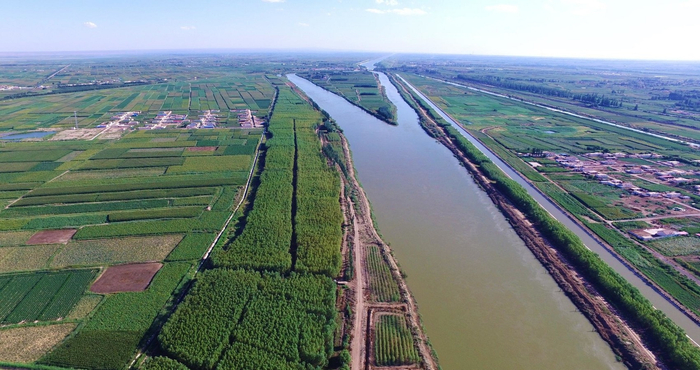
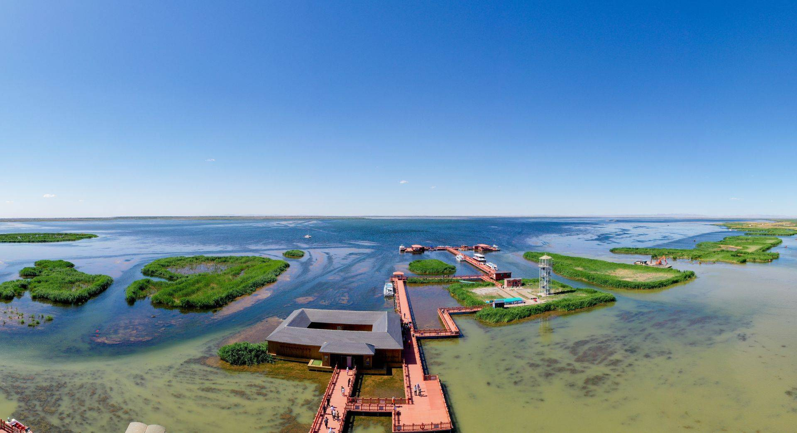
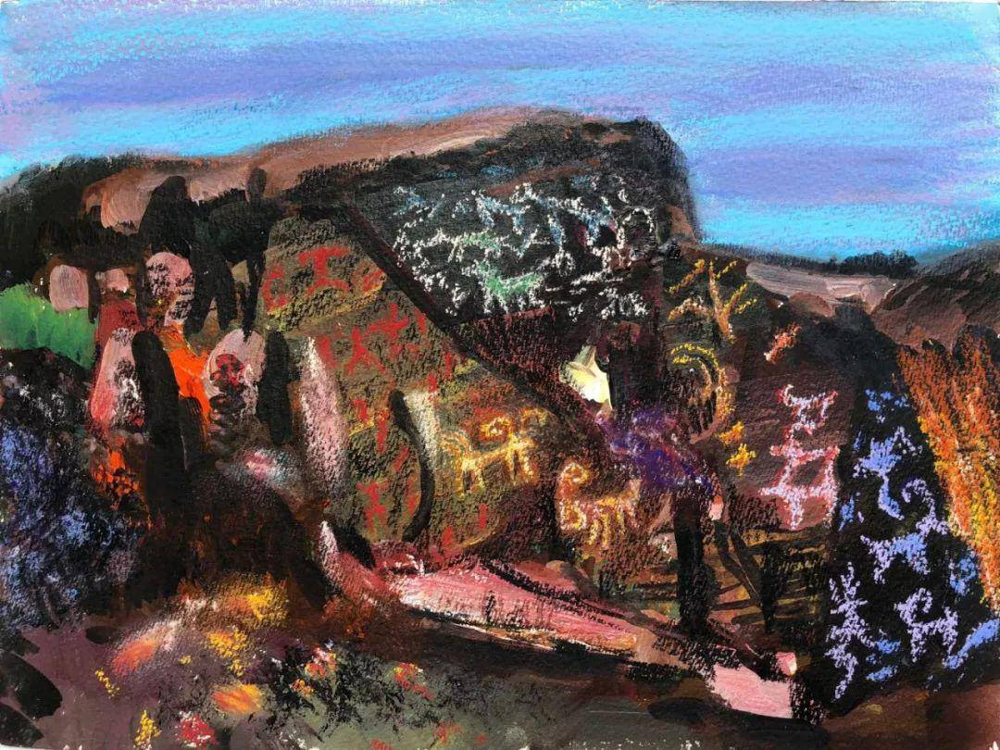
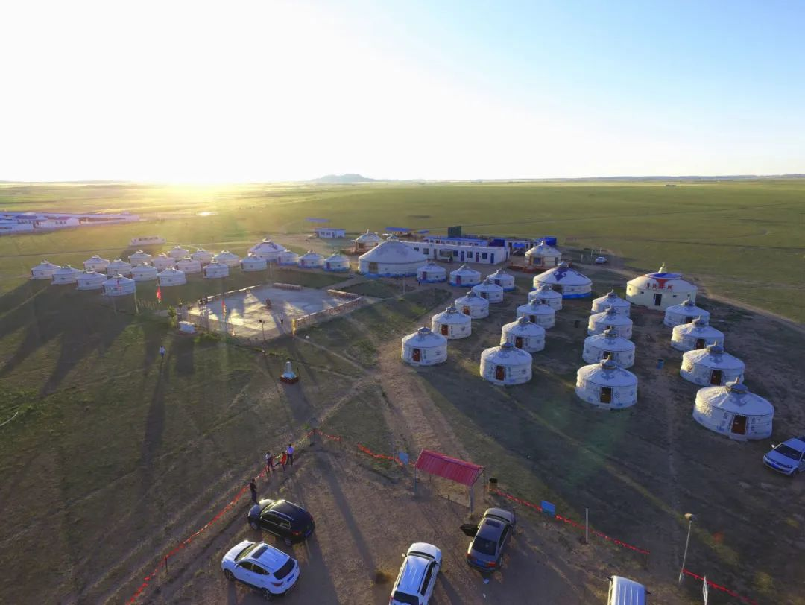
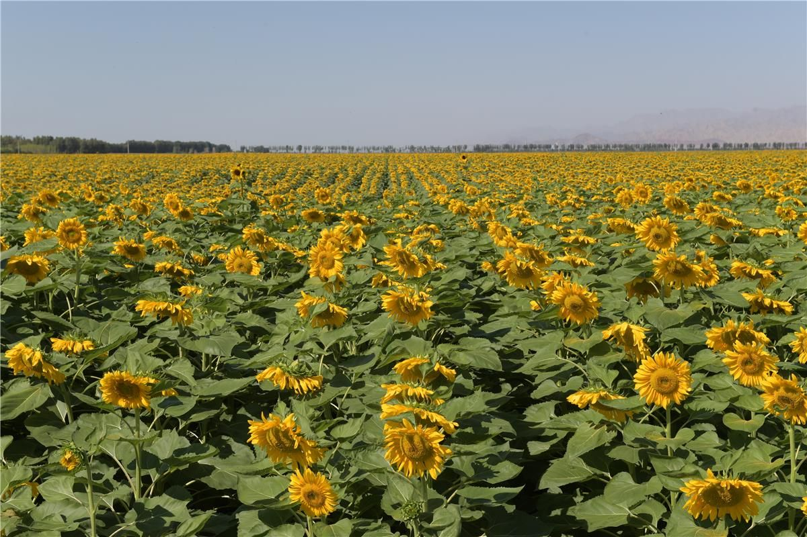
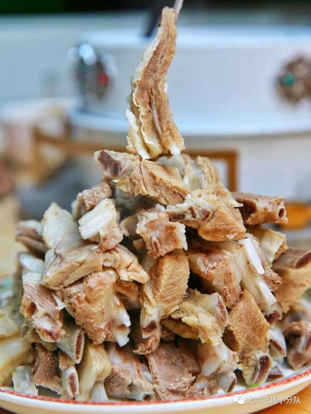
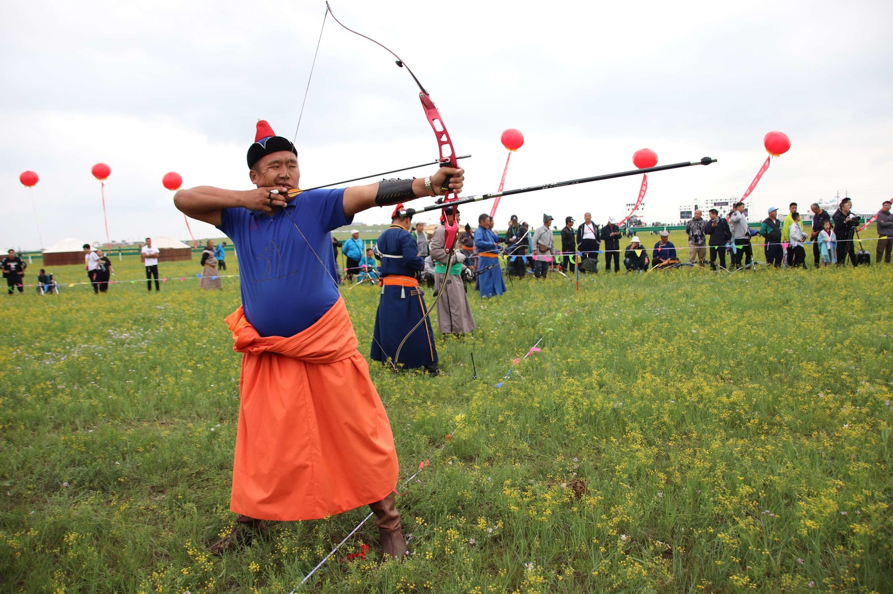
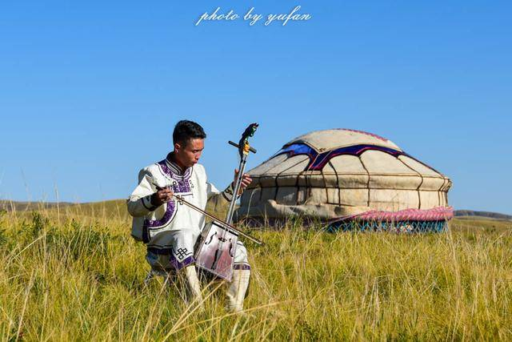
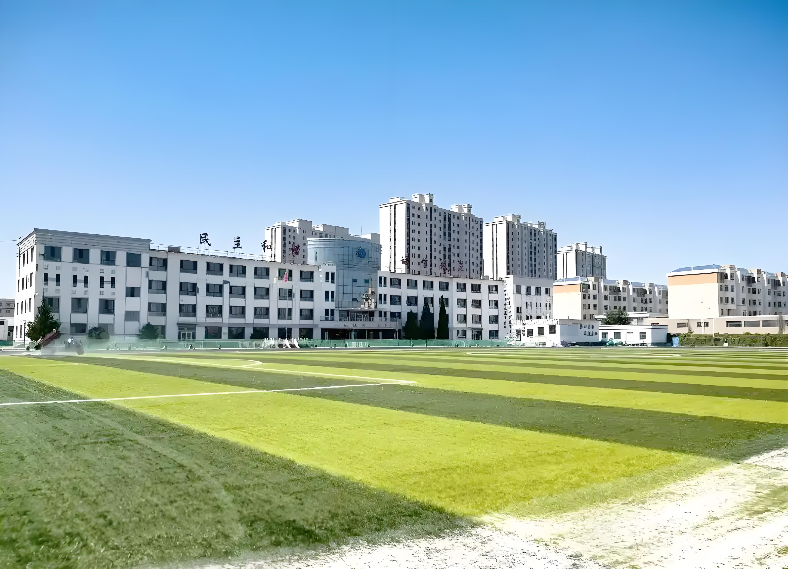
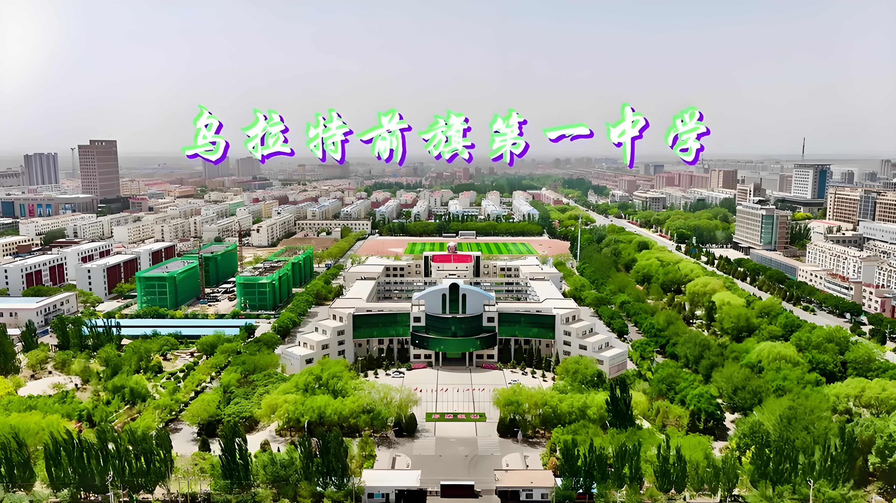

🌊 黄河百害，唯富一套
黄河流经巴彦淖尔345公里，形成"引黄灌溉"的千年河套灌区。自秦汉开渠引水，这片土地因黄河而肥沃，被誉为"塞上江南"。灌区现为中国最古老的超大型灌区之一。
我叫姚亚松，今年19岁，来自内蒙古巴彦淖尔市——一个黄河在此放慢脚步、孕育出塞上江南的地方。 目前就读于三亚学院信息与智能工程学院，正在学习人工智能、编程和智能系统相关的专业知识。
我性格随和，喜欢交朋友，和谁都能聊得来。在球场和代码之间切换是我的日常—— 上午敲代码debug，下午打球出出汗，晚上研究新技术，日子充实又快乐。
从河套平原到热带三亚，跨越三千多公里的求学路让我成长很多。 我相信技术能改变生活，也相信脚踏实地的人终会走到想去的地方。
"巴彦淖尔"在蒙古语中意为"富饶的湖泊"——这里是河套平原的核心，黄河在这里画了一个大写的人字。

黄河流经巴彦淖尔345公里，形成"引黄灌溉"的千年河套灌区。自秦汉开渠引水，这片土地因黄河而肥沃，被誉为"塞上江南"。灌区现为中国最古老的超大型灌区之一。

巴彦淖尔境内的乌梁素海是黄河流域最大的功能性湿地，"塞外明珠"。湖面近300平方公里，芦苇丛生，候鸟云集，每年春秋上百种候鸟在此停歇。

横亘巴彦淖尔北部的阴山山脉中，散布着数万幅古代岩画——狩猎、舞蹈、祭祀，跨越旧石器到明清。这是亚欧大陆规模最大、内容最丰富的岩画群之一，已被列入国家文物保护名录。

我的家乡乌拉特前旗地处阴山脚下、黄河北岸。往北便是一望无际的乌拉特草原——夏季碧草连天、牛羊成群，蒙古族牧民世代在此放牧，那达慕大会、长调民歌代代相传。
磴口华莱士瓜皮黄瓤绿，甜如蜜、香似兰，被称"天下第一瓜"。每到夏秋，满城瓜香。

🌻全国每5粒葵花籽就有1粒来自巴彦淖尔。百万亩向日葵花海是夏秋最壮观的地景。

🐑清水煮手把肉蘸盐花，是草原最本真的味道；河套烩菜、猪肉酸烂烩菜是家家户户的家常。

🐎每年七八月草原上举办那达慕——摔跤、赛马、射箭"男儿三艺"，是蒙古族最盛大的节日。

🎵悠远的长调歌声响彻草原，马头琴拉出苍凉的旋律，是河套大地最深处的音乐灵魂。
砖茶煮奶加盐，放入炒米和奶皮子——一碗咸奶茶是草原清晨的仪式，也是游子最想念的味道。
三所学校，三段时光，一路向南追光逐梦

在黄河北岸的小城度过了三年初中时光。那会儿刚接触电脑，在微机课上第一次学会用Word打字、用搜索引擎查资料，觉得"电脑好神奇"。校园不大，但操场边的白杨树和放学后的夕阳是少年最温柔的记忆。在这里遇到了第一批好哥们儿，也第一次知道自己将来想学计算机。

高中三年是在做题、考试和偶尔打篮球中度过的。课业压力不小，但每当看到信息技术课上老师演示的一段代码就能控制屏幕上的画面，就觉得"这东西太酷了"。高考后填志愿，我毫不犹豫地选了信息与智能工程方向——从内蒙古一路向南，去三亚开启新篇章。
跨越三千多公里来到热带滨海城市三亚，开始了大学生活。学院的项目制教学让我从大一开始就动手做项目——写过简单网页、搭过智能小车、调过AI模型。椰子树下写代码、篮球场上下场、和来自五湖四海的同学一起学习成长，这是属于我的大学时光。
一个用脑，一个用身体；一个在屏幕里，一个在球场上
从初中开始打篮球，一打就是六七年。最喜欢的事是傍晚约上几个朋友去球场，跑到天黑看不见筐为止。打篮球教会我团队配合、不服输的劲头，也让我交到了很多朋友——球场上的兄弟，比什么都实在。
来三亚以后改打室外场，椰子树底下打球的感觉很不一样，有点像度假顺便出出汗。位置偏后卫，速度快、突破还行，三分看手感。
高中时就对编程感兴趣，大学正式系统学习。从最基础的C语言"Hello World"开始，到现在接触Python、前端三件套（HTML/CSS/JS），还了解一些AI相关的模型调用和数据处理。虽然还是新手阶段，但每次跑通一个程序、改出一个bug都特别有成就感。
我对AI方向尤其感兴趣——觉得用代码让机器"学会"做事情是很酷的事。目前跟着学院项目制课程做一些小项目，一步一个脚印往前走。
我是那种和谁都能聊到一起的人——不太计较、喜欢帮忙、不爱跟人闹别扭。从小在河套长大，草原人的直爽和热情是我骨子里的东西；来了三亚以后又多了几分南方人的细腻。球场上有争执我来打圆场，小组作业有人掉链子我来补。我觉得人与人之间最重要的就是真诚和包容，你真心待人，别人也会真心待你。